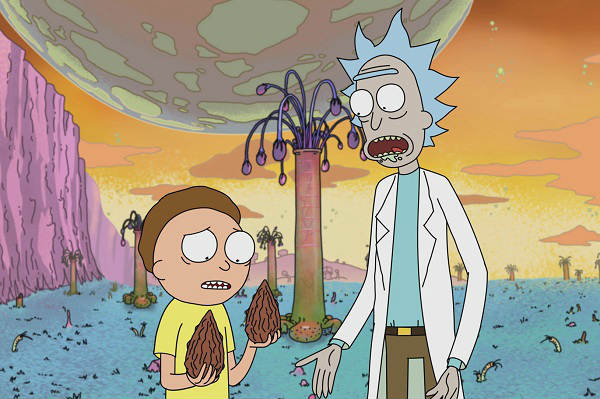

A primeira temporada de "Rick and Morty" apresenta a premissa da série, seguindo as aventuras do cientista excêntrico Rick Sanchez e seu neto Morty Smith. Rick leva Morty em viagens interdimensionais e intergalácticas, muitas vezes colocando-os em situações perigosas e surreais. A temporada explora temas de viagem no tempo, realidades alternativas e existencialismo.
A segunda temporada continua com mais enredos complexos e hilários. A temporada aprofunda as relações entre os personagens, incluindo a família de Morty e os colegas de classe de Morty e sua irmã. Os episódios exploram temas como amor, ética, e a natureza da realidade, enquanto Rick enfrenta alguns inimigos de seu passado. A temporada também traz mais sobre o passado de Rick e seu relacionamento com sua família.

A terceira temporada mantém a mistura de comédia, ficção científica e crítica social que caracteriza a série. Rick enfrenta desafios pessoais, como a prisão galáctica e o colapso de seu relacionamento com sua família. A temporada também aborda questões filosóficas, como a existência e a identidade. Episódios memoráveis como "Pickle Rick" e "The Ricklantis Mixup" adicionam camadas à narrativa geral.

A quarta temporada se concentra em explorar a dinâmica familiar enquanto Rick e Morty continuam suas aventuras interdimensionais. A temporada inclui episódios independentes e mais focados nos personagens secundários, como Jerry e Beth. Temas como mudança, identidade e responsabilidade são explorados em profundidade, enquanto a série mantém seu humor irreverente e satírico.